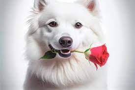

Siberian huskies have a very dense, plush coat with plenty of undercoat. A small ruff is found around the neck but no long fringes on the legs or tail. Color ranges from black to white and everything in-between. Most dogs do have white markings, particularly on the chest and legs.
a black dog is associated with good luck. According to black dog Vastu, keeping pets at home is quite beneficial for the members living in the house.
Ragdoll cats make excellent family pets because they love to be around people and are much more affectionate than the average cat.
The Persian cat, also known as the Persian longhair, is a long-haired breed of cat characterized by a round face and short muzzle.